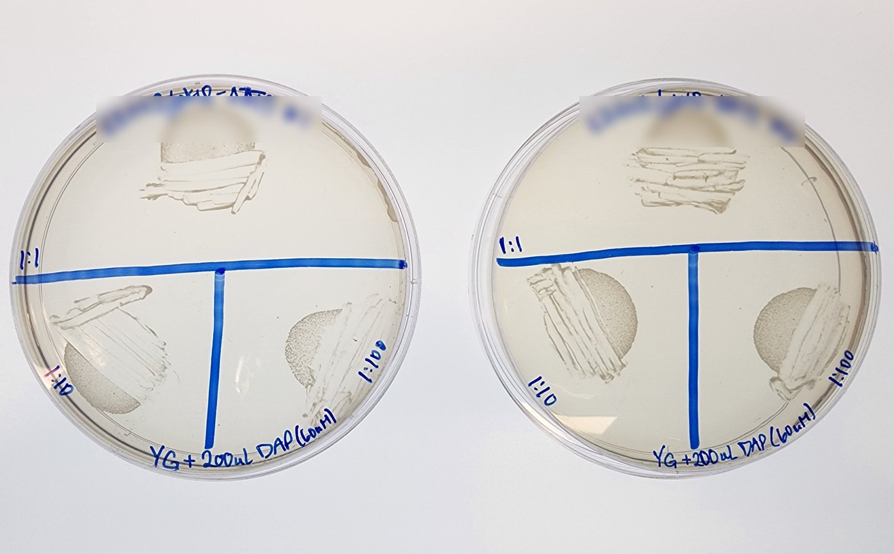
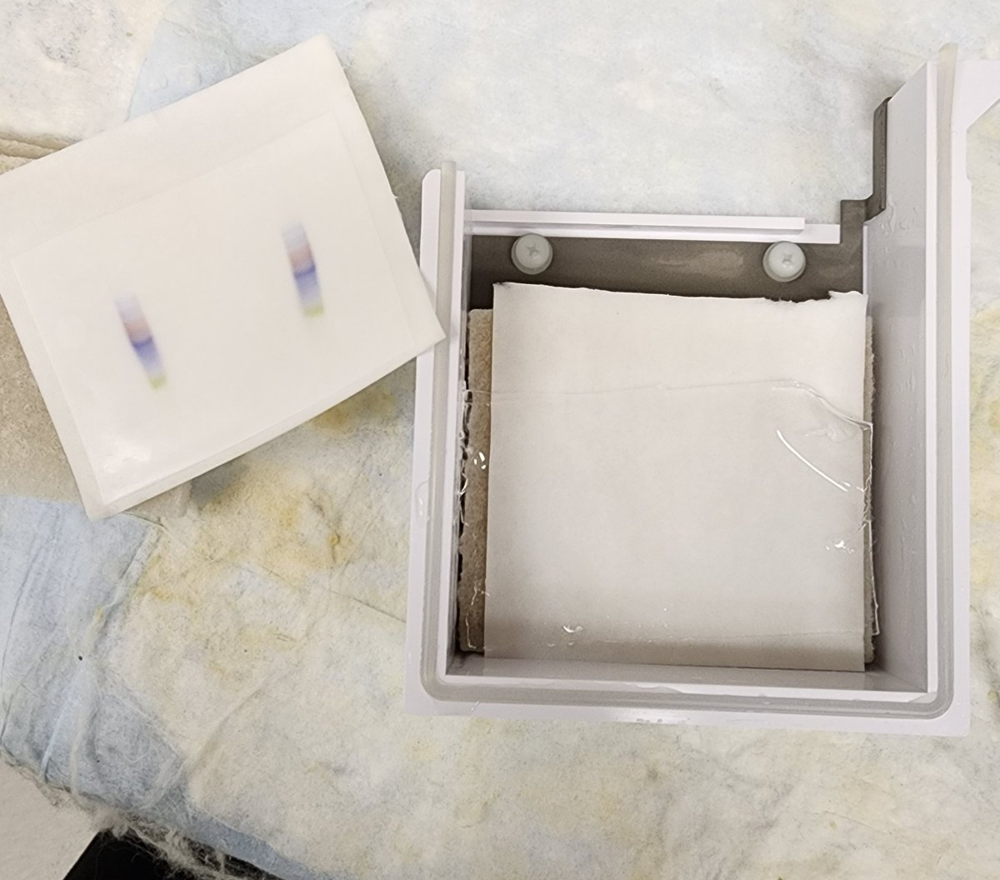
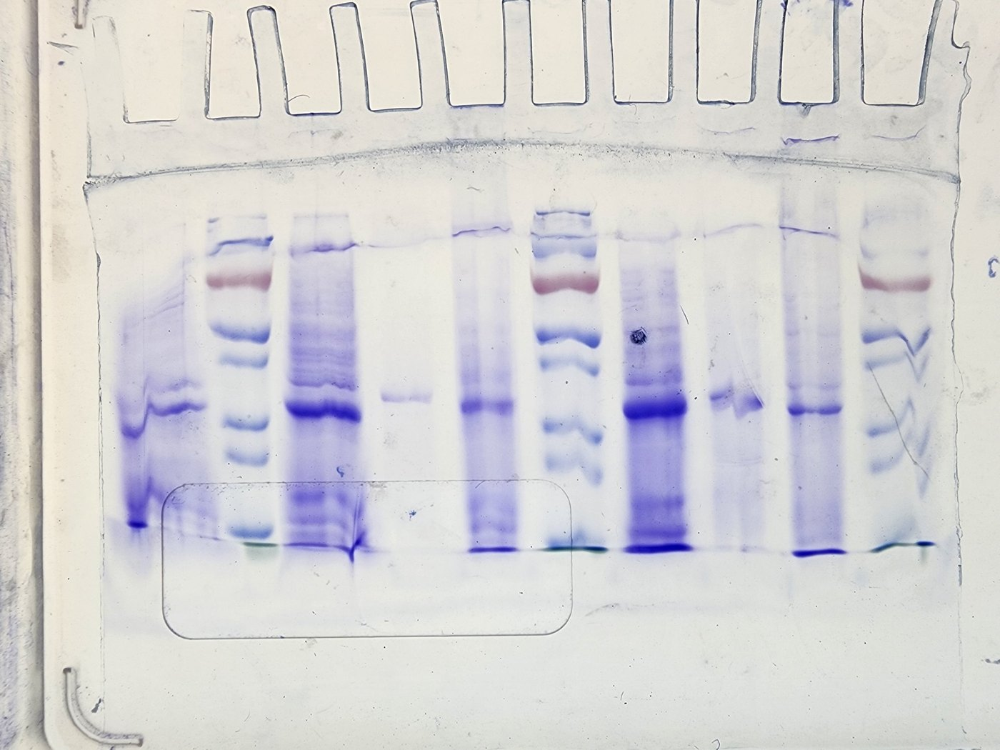

Troubleshooting FAQ.
Common failure points and what usually fixes them. Entries come from lab experience and are marked as drafts until reviewed.
Highlighted values are awaiting confirmation. Do not rely on them without checking.
Media and plates Cloning and PCR Transformation and conjugation Protein expression and purification Gels and western blots Mycobacterial culture and genetics
Media and plates
Why do I get small colonies around my big colonies on ampicillin plates?
These are satellite colonies, which appear when plates are incubated longer than about 16–18 hours at 37 °C. Use carbenicillin, which is more stable than ampicillin,.
My hygromycin or zeocin plates don't seem to select for E. coli.
Check the salt in your LB. Hygromycin and zeocin do not work well in high-salt (Miller) LB; use low-salt LB (Lennox or Luria). Also make sure the agar had cooled enough before the antibiotic was added.
How hot can the agar be when I add the antibiotic?
Let the molten agar cool until the bottle is comfortable to hold for about 10 seconds with your bare hand. Antibiotic added to agar that is too hot is degraded. Add the antibiotic, swirl to mix, then pour.
How long can I leave poured plates on the bench?
Let plates set and cool on the bench with the lids closed for about 16–24 h, then store them. Do not leave them out longer than 24 h or without lids, because they may dry out or become contaminated.
Can I autoclave 7H9 or ADC?
No. Both 7H9 and 10X ADC are filter sterilized, not autoclaved.
My defined (HdB) medium forms a precipitate.
Follow the order of additions in the recipe, and make sure the medium is autoclaved and then filter sterilized; otherwise a precipitate forms over time.
Cloning and PCR
My PCR fails or gives a smear. What should I check?
The usual cause is an annealing temperature that does not suit the primers, so run a gradient PCR across 50–70 °C first. Also check your template amount (it should not exceed 1,000 ng), the age and number of freeze–thaw cycles of your working primers, and your extension time. For smeary bands, make sure you do not add the polymerase until right before the tubes go into the thermocycler.
My colony PCR from mycobacterial colonies gives no band, but my positive control works.
Try a few colonies with a high-fidelity polymerase (Phusion) and add a 5–10 minute initial step at 98 °C to lyse the cells. If you lysed colonies by boiling in DMSO, switch to a water suspension without boiling, since DMSO lysates can carry over too much DNA and inhibit the reaction.
Can I use my colony PCR product for cloning?
No. Taq has low fidelity, so use the colony PCR master mix for checking only, never for cloning.
I get few or no colonies from a Gibson assembly with more than two fragments.
Efficiency falls with each additional insert. One or two inserts is best, and up to three has worked. For more, first run a Gibson reaction with all the inserts but no vector, add 1 µL of the raw reaction to a new PCR with the two terminal primers to make a single pre-assembled fragment, purify it as for a single insert, and use that in the final Gibson reaction with the vector.
My Gibson plate and the vector-only control have similar colony counts.
The vector may not be fully cut or purified. Check the digest.
My gel purification yield is very low.
Large losses are expected. Eluting in 30 µL rather than 50 µL gives a more concentrated product, and the low-melt method is faster for Gibson assembly. For a vector, load more of the digestion reaction on the gel, or add more plasmid to the digestion. If the gel slice does not dissolve, keep vortexing at the stated intervals during the 2–3 hour incubation.
Transformation and conjugation
My E. coli transformation gives few or no colonies, and my gene may be toxic. What can I change?
Recover at 30 °C for about 1.5 hours and incubate the plate at 30 °C overnight. Colonies take 24+ hours to appear but are often correct, with little background. TOP10 and XL1-Blue (which carries a tet repressor) tend to suit toxic cloning, though both grow more slowly than DH5α.
I get few or no colonies after a chemical transformation, and my gene is not toxic.
Test the efficiency of your competent cells with a control plasmid (the efficiency test is described on the protocol page).
Can I refreeze chemically competent cells?
No. Store the cells at –70 °C and do not refreeze them.
My electroporation arcs or has low efficiency.
For arcing, make BCG and M. tuberculosis competent cells fresh each time. For low efficiency, wash mycobacteria in glycerol, not water, and keep E. coli cells cold throughout.
How do I set up and label bi-parental mating plates?
Mix donor and recipient by pipetting (not vortexing) to 100 µL total, at three ratios by volume: 50 µL donor + 50 µL recipient, 10 + 90, and 1 + 99. Spot the entire 100 µL of each ratio onto a YG + DAP plate and do not spread. Use one plate per donor × recipient combination, with the three ratios on the same plate, and label each sector with its ratio.
I don't see growth in my conjugation spots the morning after mating.
Check again later that day, then again the next morning, before concluding the mating failed.
I see a lawn instead of single colonies on my selection plate after conjugation.
Take a small amount of the lawn and streak for single colonies first, then screen single colonies by colony PCR.
Donor *E. coli* keeps growing on my selection plates after conjugation.
Confirm that the selection plates contain no DAP and that the post-mating washes in PBS were done twice.
My mycobacterial mating efficiency is low.
For microtiter-plate matings, use fresh colonies (less than a week old); otherwise transfer efficiencies fall.
Protein expression and purification
My protein precipitates after Ni purification.
Imidazole causes precipitation. Analyze the fractions on a gel, pool the ones you want, and buffer exchange to remove the imidazole. Also, after elution run 1.25 CV of elution buffer to wash the column rather than water, because remaining protein can precipitate on the resin.
Should I put EDTA in my Ni-NTA buffers?
Not in the wash and elution buffers, because EDTA chelates Ni²⁺ and reduces the free Ni available to bind your protein. It depends on the protein, though: DivIVA is strongly stabilized by EDTA, and every attempt to dialyze it into buffer without EDTA ended in precipitation, so EDTA is in its lysis, dialysis and SEC buffers but not in the wash and elution buffers.
My lysate is cloudy. Can I load it on the column?
Syringe-filter a cloudy supernatant before loading. Particles in the column or tubing raise the pressure, which is why all buffers and lysates are filtered.
My FPLC column lost resolution or the pressure is high.
The resin beads are squishable: too much pressure crushes them and they will not recover, after which the column loses resolution and becomes even more sensitive to pressure. Set a pressure limit below the manufacturer’s maximum, with a program override that lowers the flow rate when pressure is too high. Particles raise pressure (filter everything), and glycerol raises pressure too, so lower the flow rate with glycerol buffers.
I see air bubbles or salt precipitate in my FPLC system.
For bubbles: prime the lines whenever you change buffers, degas buffers, run a system flush before every run, and keep both pump inlet lines in liquid at all times. For salt: salty buffer plus ethanol can precipitate salt in the column, so always wash with water (1.25 CV) before ethanol (1.25 CV). If you want a different buffer the next day, mix the two buffers in a beaker first and only go straight from one to the other if nothing precipitates.
Can I run the EmulsiFlex dry or load a lot of sample?
No to both. Without liquid lubrication the plunger can seize in the pump, which shortens seal life, so do not run it dry for more than a few cycles. Too much sample can block the check valves and stop the pump.
My TCA pellet sample buffer turns yellow.
The sample is acidic. Add 0.5 µL saturated NaOH, mix, and repeat until the dye is blue and the pellet dissolves.
Gels and western blots
My protein ladder is smeared and the colours run together on the membrane. What went wrong?
Catch this on the gel, not after the transfer. A pre-stained ladder should already be resolved into separate coloured bands on the gel before you assemble the sandwich. If it is smeared at that point, the problem is in the electrophoresis, and you can fix it before spending a membrane and an hour on a transfer. Things to check: a ladder that is overloaded or has gone off (old, many freeze–thaw cycles), a gel that ran too hot or too fast, old or wrongly diluted running buffer, or a gel that did not polymerize well.
What does a good SDS-PAGE gel look like, and what went wrong with mine?
The example below is nearly perfect, with two flaws. The lane edges are “melted” (distorted at the sides, usually a sign that the gel got too warm during the run), and the ladder did not separate properly because the gel did not run long enough. Run until the dye front reaches the bottom of the gel. For reference, the test-induction protocol runs at constant current, 30 mA for the first 15 min and then about 42 mA until the dye reaches the bottom, and the western protocol runs at about 35 mA for 45–60 min.
How long should I transfer?
For a wet transfer, run at about 25 V for 60 min per mini gel, with the whole unit in an ice bucket and all bubbles removed from the sandwich. Larger proteins need a longer time or more voltage. The protocol uses 75–80 min for a ~28 kDa protein.
Should I add SDS to the transfer buffer or adjust the pH of the running buffer?
Normally no to both. Do not add SDS to transfer buffer unless you need extra help moving a protein; if you do, add 0.5–1 g SDS to the 1X buffer and mix until dissolved. Do not adjust the pH of conventional Tris-glycine-SDS running buffer unless your electrophoresis system requires it.
How long should I heat my samples in sample buffer?
A common starting point is 95 °C for 10 minutes, but some proteins need other conditions. For example, the radioactive kinase assay protocol says not to heat after adding Laemmli.
My blot or fluorescence images have saturated pixels.
Do not take saturated images. Check several images across a comparison set when choosing settings, use the same settings (bit depth, exposure time, light intensity) for samples you will compare, and use 16-bit images if some samples saturate.
Mycobacterial culture and genetics
My mycobacterial cultures clump. Should I add Tween?
Tween 80 (or tyloxapol) prevents clumping in liquid culture, but it slightly changes the cell surface, so keep the concentration constant between comparisons. Do not add Tween to plates, and only use tyloxapol for carbon-starvation experiments. For click labeling, keep OD₆₀₀ below 1.0 to avoid clumping.
My low-density mycobacterial culture will not grow.
Do not over-dilute: very low-density cultures grow poorly. Inoculate at OD₆₀₀ 0.01–0.05 or more, and plan multi-day cultures (a dense preculture the day before lets you set up experiments with log-phase cells).
How do I avoid contamination in long mycobacterial incubations?
Contamination from faster-growing bacteria is the biggest risk. Antibiotics for the plasmid can protect against it, cycloheximide or other additions are sometimes used, and plates should be sealed in bags for long incubations.
Should I passage my strains to lose a plasmid or keep them going?
Avoid it. Do not passage a culture to lose the plasmid, because passaging risks suppressor mutations in the mutants. Likewise, keep wild-type stocks low-passage: M. marinum, for example, can lose its ability to lyse red blood cells, so make P1 and P2 stocks and a new P1 may be needed every few years.
My M-PFC (DHFR two-hybrid) plates are not working.
Check the medium and drug: use 7H11 (not 7H10 or 7H9 + agar), do not change the Kan, Hyg or trimethoprim concentrations, make fresh trimethoprim for plates, and do not store trimethoprim plates long at 4 °C. For membrane proteins use pUAB100 and pUAB200 and make sure the DHFR fragments sit in the cytoplasm; some proteins need a free N- or C-terminus, so test parallel and antiparallel orientations. M-PFC may also simply fail for a given pair of proteins.
Does fixation change where my protein localizes?
It can. Fixation can alter cell shape and the distribution of fluorophore-tagged molecules, so for a final experiment test that fixation does not affect the phenomenon you are studying. It is best for trial runs or when live imaging is not possible.
MicrobeJ merges or splits my cells, or the wrong channel is analyzed.
Check the channel assignment before every analysis. For merged or split cells, tighten the shape ranges and/or curate manually in the experiment editor. Use the same set of columns for every image so the exported data can be combined.